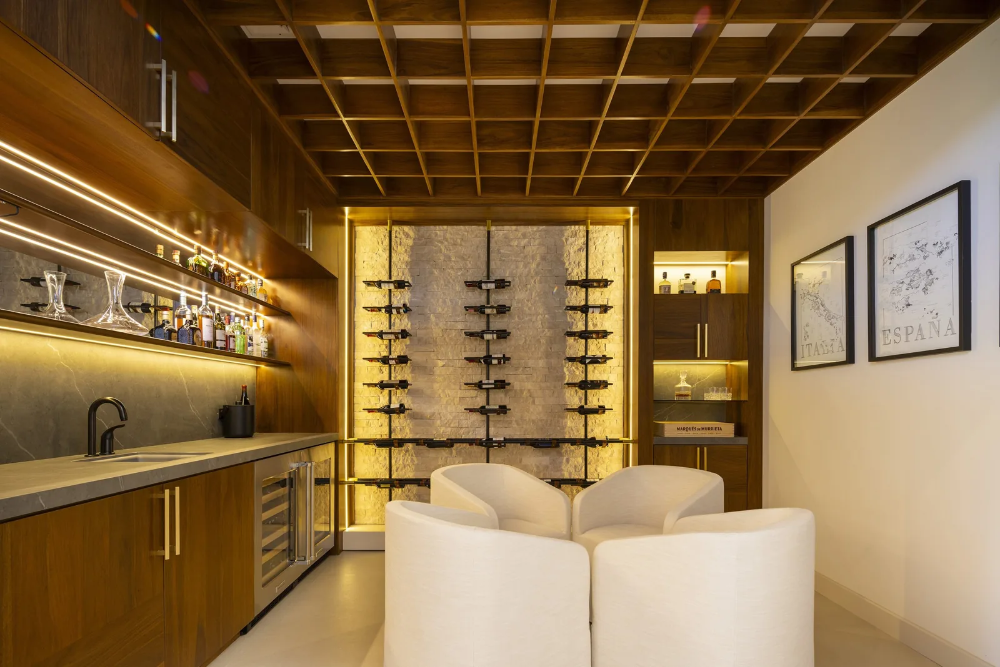
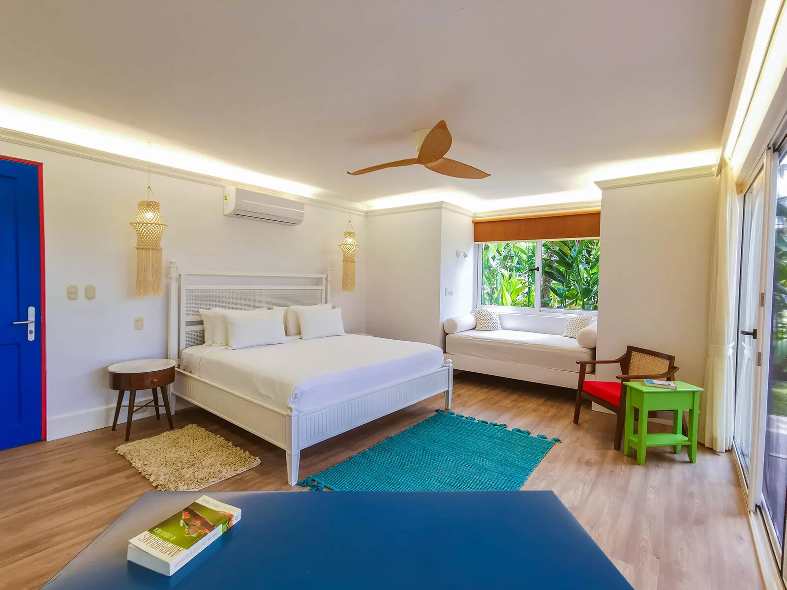
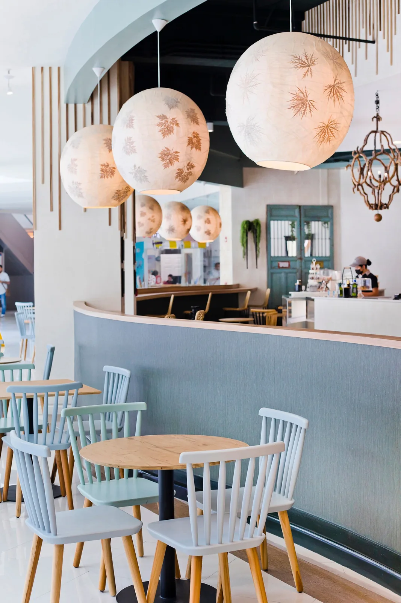

01
Referencia de catálogo
Proyectos residenciales
Cocinas, clósets, baños y mobiliario hecho a medida.

Imagen publicada por FabricarteMobiliario residencial, comercial y de hospitalidad. Del espacio disponible a una especificación que se pueda revisar.
Guarda tus referencias en una lista local y prepara el siguiente paso. Precios, variantes y existencias se revisan en cada ficha oficial.
Cocinas, clósets, baños y mobiliario hecho a medida.

Mobiliario para espacios de hospitalidad; galería oficial de proyectos.

Recepciones, exhibición y otros elementos para espacios comerciales.
Diseña y fabrica mobiliario residencial y comercial, cocinas y clósets por proyecto.
Prueba cantidades y condiciones. Obtén un resumen local para revisar antes de hablar con la empresa.
Datos revisados el 3 de noviembre de 2026. La empresa confirma cualquier condición vigente.
Cocinas, clósets, baños y mobiliario hecho a medida.
Mobiliario para espacios de hospitalidad; galería oficial de proyectos.
Recepciones, exhibición y otros elementos para espacios comerciales.
Sí. La empresa describe manufactura de mobiliario y elementos arquitectónicos personalizados.
Su oferta incluye muebles empotrados, enchapes y elementos de paredes y cielos.
El sitio menciona camas, mesas de noche y mesas de café, entre otros.
La empresa publica San José, Costa Rica como ubicación.
Su página invita a describir los requerimientos al equipo; esta muestra prepara esa conversación.